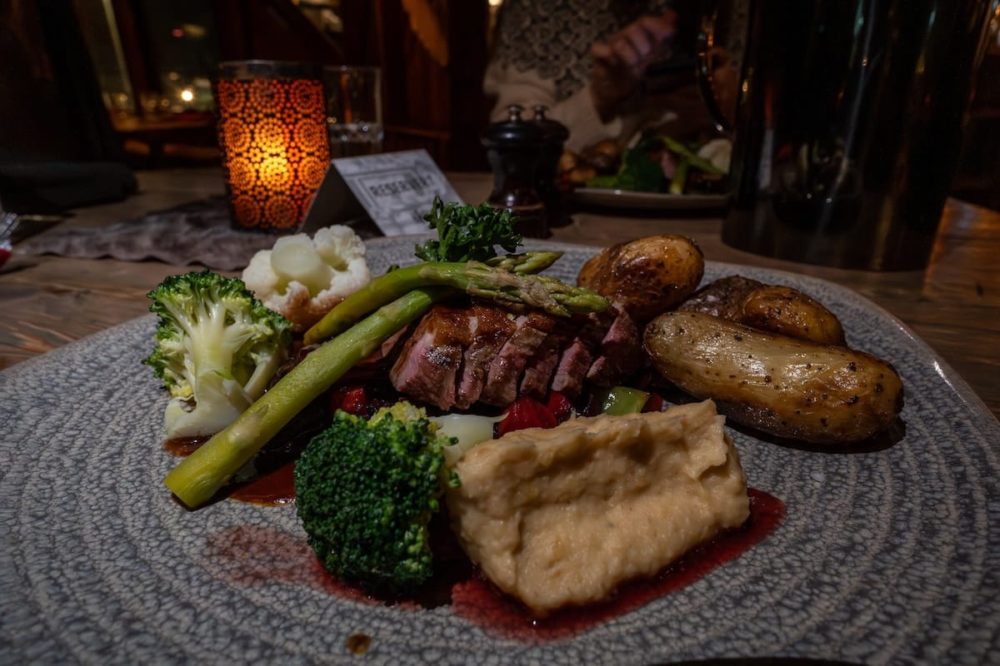
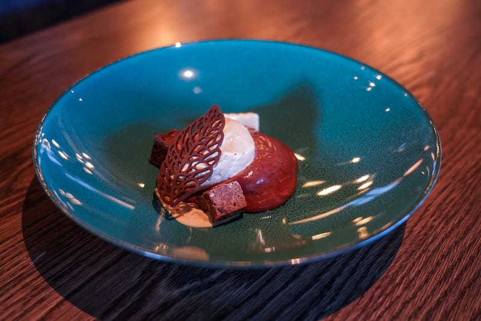
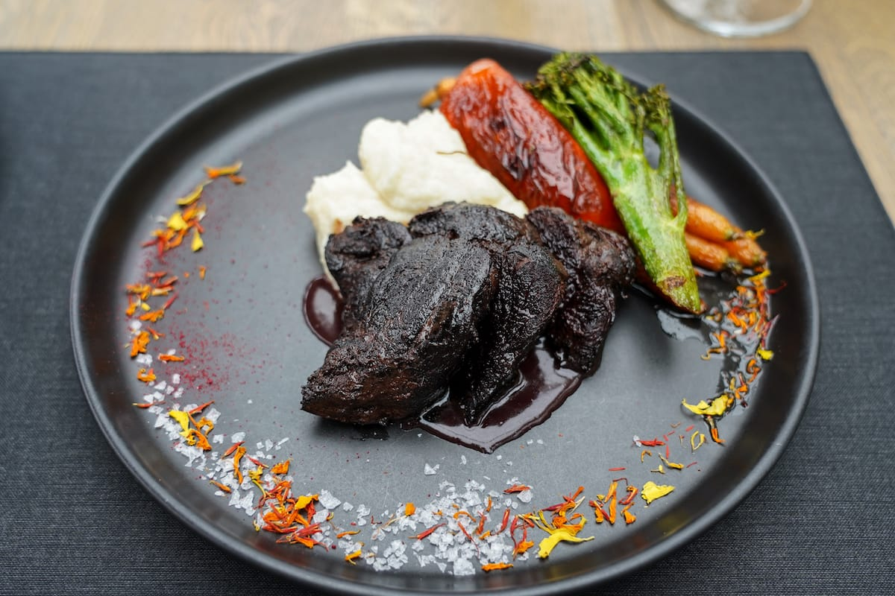
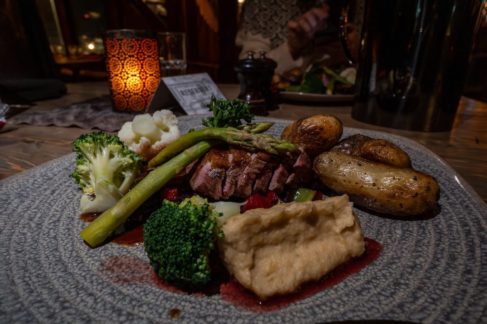
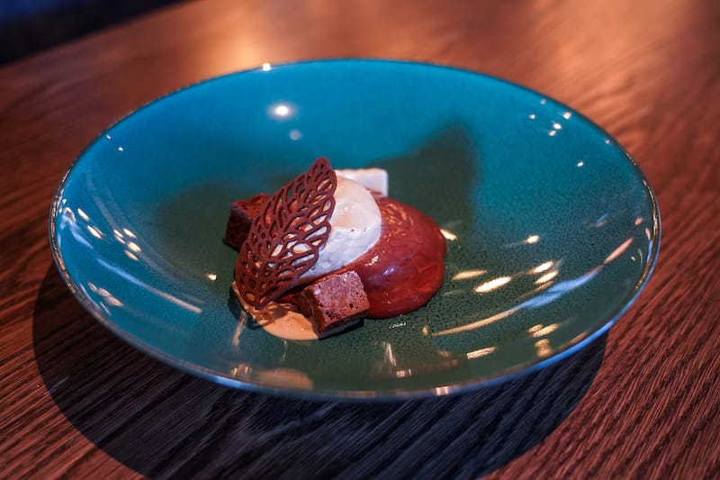
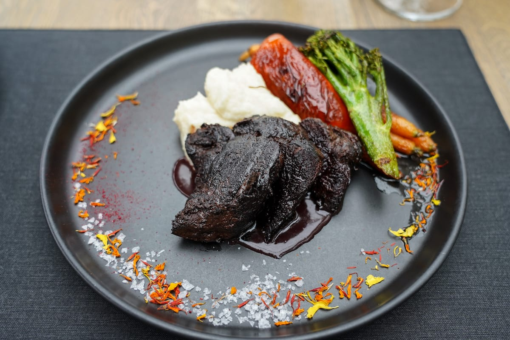

- Top Five Restaurants in Longyearbyen
- Huset Restaurant
- Gruvelageret
- Restaurant Kroa
- Funken Restaurant
- Vinterhagen Restaurant and Peisen Bar (The Winter Garden and The Fireplace)
All of these restaurants offer a variety of experiences, such as Huset, which strives to only use ingredients from the arctic, with ingredients from Arctic Norway, Finland, and Svalbard. Funken restaurant is also a part of a hotel where visitors can stay, and also has a bar in the restaurant. Kroa also offers a variety of foods, including wild pigeon as an example, but they also have a pizza menu. Around 3/5s of the restaurants in Longyearbyen serve seal.
Fun Fact: Gruvelageret cannot, or rather, should not, be walked to because it is in the zone where firearms are needed for protection, so you should get a taxi, and the server can get another for you to get back.
Here's another fun fact, this time about Vinterhagen Restaurant. It has been around since 2004 and actually has a garden inside the restaurant.
 




